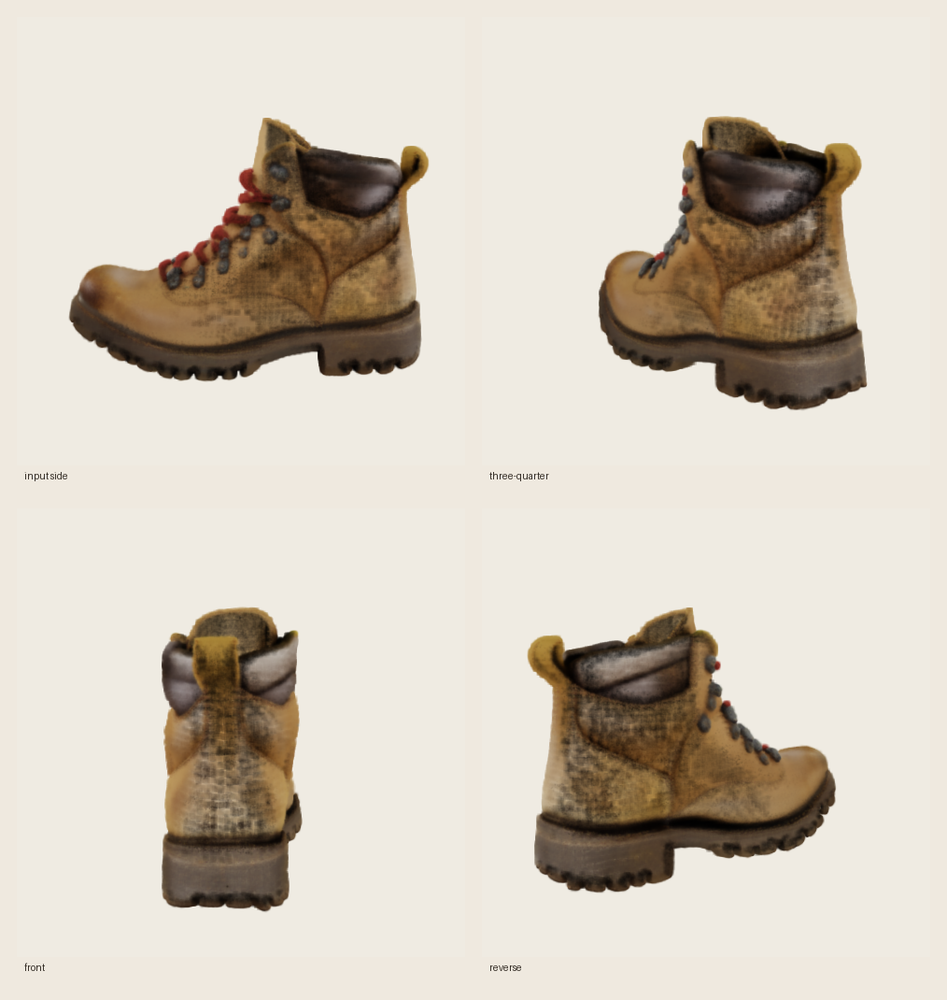

TRELLIS image-to-3D¶
mlx-diffuser includes an experimental native MLX port of the image-conditioned
Microsoft TRELLIS pipeline. It accepts one
object image and exports a standard 3D Gaussian Splatting PLY without PyTorch, CUDA,
spconv, or nvdiffrast.
Current support¶
| Stage | Native implementation |
|---|---|
| Image conditioning | DINOv2-large with registers, MLX attention |
| Sparse-structure generation | dense 16³ flow transformer + exact TRELLIS Euler/CFG schedule |
| Occupancy decoding | MLX Conv3D decoder, 16³ to 64³ |
| Structured latent generation | sparse SLAT flow transformer at 64³ |
| Representation decoding | sparse Swin Gaussian decoder |
| Export | standard 3D Gaussian PLY |
The mesh/FlexiCubes and radiance-field decoders, multi-image conditioning, and a native Gaussian renderer are not included yet. The PLY is a splat representation, not a mesh.
Verified sample¶
 |
|
| synthetic photorealistic input | four depth-aware preview views of the generated PLY |
This is a real end-to-end run of the converted official checkpoints, not a mockup:
| Setting | Value |
|---|---|
| Hardware | MacBook Pro, M1 Pro (8-core), 16 GB unified memory |
| Checkpoint | microsoft/TRELLIS-image-large + DINOv2-with-registers-large |
| Seed | 42 |
| Sampling | 25 sparse-structure + 25 SLAT Euler steps |
| Converted precision | 8-bit DINOv2 and dense flow; FP16 sparse flow/decoders |
| Generation time | 202.36 seconds (checkpoint already converted) |
| MLX peak memory | 2.07 GB |
| Output | 433,408 Gaussians, 67 MB ASCII PLY |
The preview uses degree-zero SH color, sigmoid opacity, perspective projection, and a depth-aware surface filter. It verifies recognizable geometry and unseen viewpoints, but it is not a pixel-parity replacement for TRELLIS's CUDA anisotropic rasterizer.
Install with uv¶
From a source checkout:
uv sync --extra trellis
As a dependency in another uv project:
uv add "mlx-diffuser[trellis]"
The extra installs huggingface_hub, which is needed only to fetch and convert the
official checkpoints. Runtime image processing uses Pillow from the core package.
Generate a splat¶
A transparent PNG with one centered object works best:
uv run mlx-diffuser generate --model trellis \
--image object.png \
--download \
--seed 42 \
--out object.ply
--download is needed only the first time. It fetches the required official TRELLIS
and DINOv2 safetensors, converts them to MLX, and writes a staged checkpoint under
checkpoints/trellis-image-large-mlx. Later runs omit that flag.
For an opaque image, either remove the background before inference or install the optional CPU background remover:
uv add "rembg[cpu]"
uv run mlx-diffuser generate --model trellis --image photo.jpg \
--remove-background --out object.ply
Python API¶
from mlx_diffuser import TrellisImageTo3DPipeline
from mlx_diffuser.converters import download_and_convert_trellis
checkpoint = download_and_convert_trellis("checkpoints/trellis-image-large-mlx")
pipeline = TrellisImageTo3DPipeline.from_pretrained(checkpoint)
result = pipeline("object.png", seed=42)
result.save_ply("object.ply")
To convert already-downloaded official weights, use convert_trellis_checkpoint(...)
and pass the TRELLIS directory plus the DINOv2-with-registers directory. Conversion is
strict: missing or unexpected tensors fail instead of silently producing a partial model.
Why it fits better on a Mac¶
The converted checkpoint is split into five independently loadable components:
- DINOv2 image conditioner
- dense sparse-structure flow model
- occupancy decoder
- sparse SLAT flow model
- Gaussian decoder
The pipeline evaluates and releases each stage before loading the next. DINOv2 and the dense structure flow are 8-bit by default; sparse features stay sparse rather than materializing a 64³ feature volume; and low-memory mode evaluates each sparse transformer block so MLX can release intermediate graphs promptly.
Sparse submanifold Conv3D runs through a fused custom Metal kernel. Coordinate topology and neighbor maps are built and cached on the CPU, while all feature tensors and multiply-accumulate work stay in MLX/Metal. A pure-MLX fallback remains available for autodiff and is tested numerically against the Metal implementation.
Official checkpoint verified
Strict conversion and a full 25 + 25-step inference have been verified on a 16 GB M1 Pro. The port remains experimental because component-by-component numerical parity against the PyTorch/CUDA reference and a native anisotropic renderer are still pending.
Tuning¶
The official defaults are 25 sparse-structure steps and 25 SLAT steps. --steps changes
both together. Fewer steps are faster but may reduce geometry quality. CLI TRELLIS runs
always use staged low-memory evaluation; the Python API exposes low_memory=False for
benchmarking when more unified memory is available.